{kind=link}
{kind=link}
{kind=link}
{kind=link}
{kind=link}
{kind=link}
{kind=link}
{kind=link}
{kind=link}
{kind=link}

Mean age for HookLine with 95% confidence intervals based on current sample sizes.
Francis data weighting method TA1.8: too few points to calculate adjustments.
For more info, see Francis (2011).
file: comp_agefit_data_weighting_TA1.8_HookLine.png
Age comps, aggregated across time by fleet.
Labels 'retained' and 'discard' indicate discarded or retained sampled for each fleet. Panels without this designation represent the whole catch.
file: comp_agefit__aggregated_across_time.png
Pearson residuals, comparing across fleets
Closed bubbles are positive residuals (observed > expected) and open bubbles are negative residuals (observed < expected).
file: comp_agefit__multi-fleet_comparison.png
Age comps, whole catch, BottomTrawl (plot 1 of 2).
'N adj.' is the input sample size after data-weighting adjustment. N eff. is the calculated effective sample size used in the McAllister-Ianelli tuning method.
file: comp_agefit_flt1mkt0_page1.png
Age comps, whole catch, BottomTrawl (plot 1 of 2).
'N adj.' is the input sample size after data-weighting adjustment. N eff. is the calculated effective sample size used in the McAllister-Ianelli tuning method. (plot 2 of 2)
file: comp_agefit_flt1mkt0_page2.png
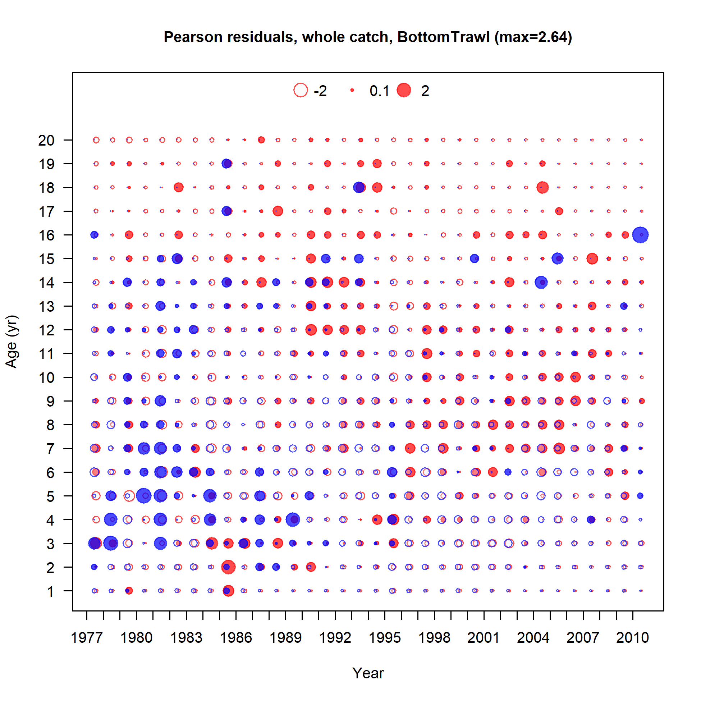
Pearson residuals, whole catch, BottomTrawl (max=2.64) (plot 2 of 2)
Closed bubbles are positive residuals (observed > expected) and open bubbles are negative residuals (observed < expected).
file: comp_agefit_residsflt1mkt0_page2.png
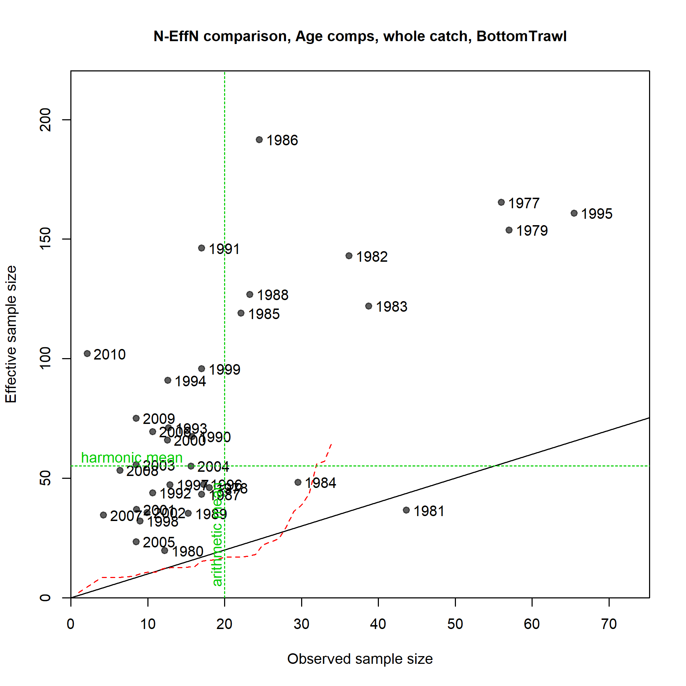
N-EffN comparison, Age comps, whole catch, BottomTrawl
file: comp_agefit_sampsize_flt1mkt0.png
Mean age for BottomTrawl with 95% confidence intervals based on current sample sizes.
Francis data weighting method TA1.8: thinner intervals (with capped ends) show result of further adjusting sample sizes based on suggested multiplier (with 95% interval) for age data from BottomTrawl:
1.0005 (0.688-1.76)
For more info, see Francis (2011).
file: comp_agefit_data_weighting_TA1.8_BottomTrawl.png
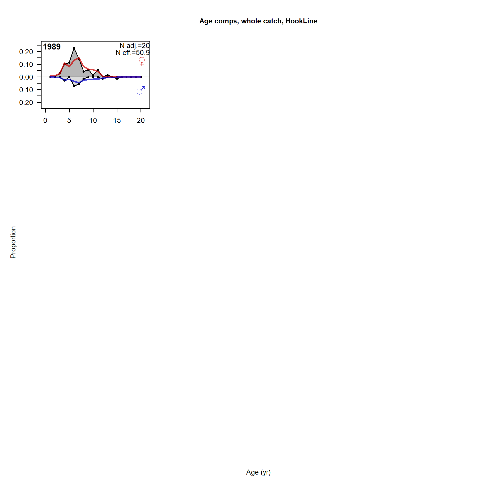
Age comps, whole catch, HookLine.
'N adj.' is the input sample size after data-weighting adjustment. N eff. is the calculated effective sample size used in the McAllister-Ianelli tuning method.
file: comp_agefit_flt2mkt0.png
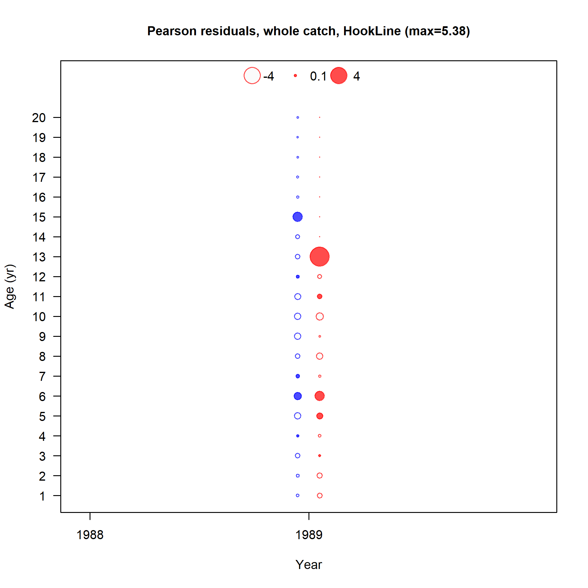
Pearson residuals, whole catch, HookLine (max=5.38)
Closed bubbles are positive residuals (observed > expected) and open bubbles are negative residuals (observed < expected).
file: comp_agefit_residsflt2mkt0.png
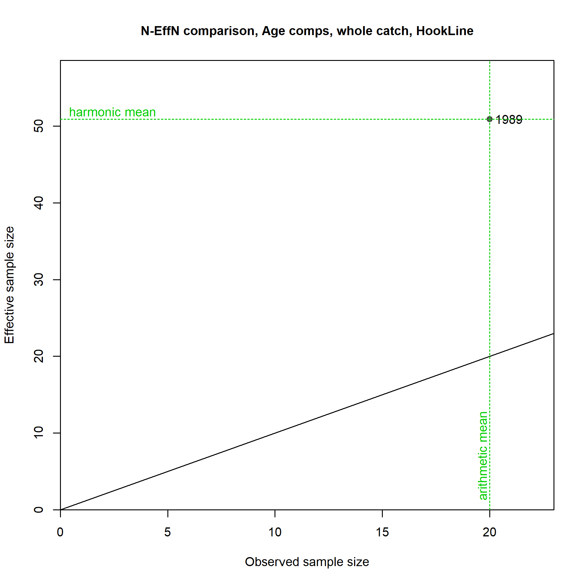
N-EffN comparison, Age comps, whole catch, HookLine
file: comp_agefit_sampsize_flt2mkt0.png
Mean age for HookLine with 95% confidence intervals based on current sample sizes.
Francis data weighting method TA1.8: too few points to calculate adjustments.
For more info, see Francis (2011).
file: comp_agefit_data_weighting_TA1.8_HookLine.png

Age comps, whole catch, SYN.
'N adj.' is the input sample size after data-weighting adjustment. N eff. is the calculated effective sample size used in the McAllister-Ianelli tuning method.
file: comp_agefit_flt4mkt0.png
Pearson residuals, whole catch, SYN (max=3.33)
Closed bubbles are positive residuals (observed > expected) and open bubbles are negative residuals (observed < expected).
file: comp_agefit_residsflt4mkt0.png
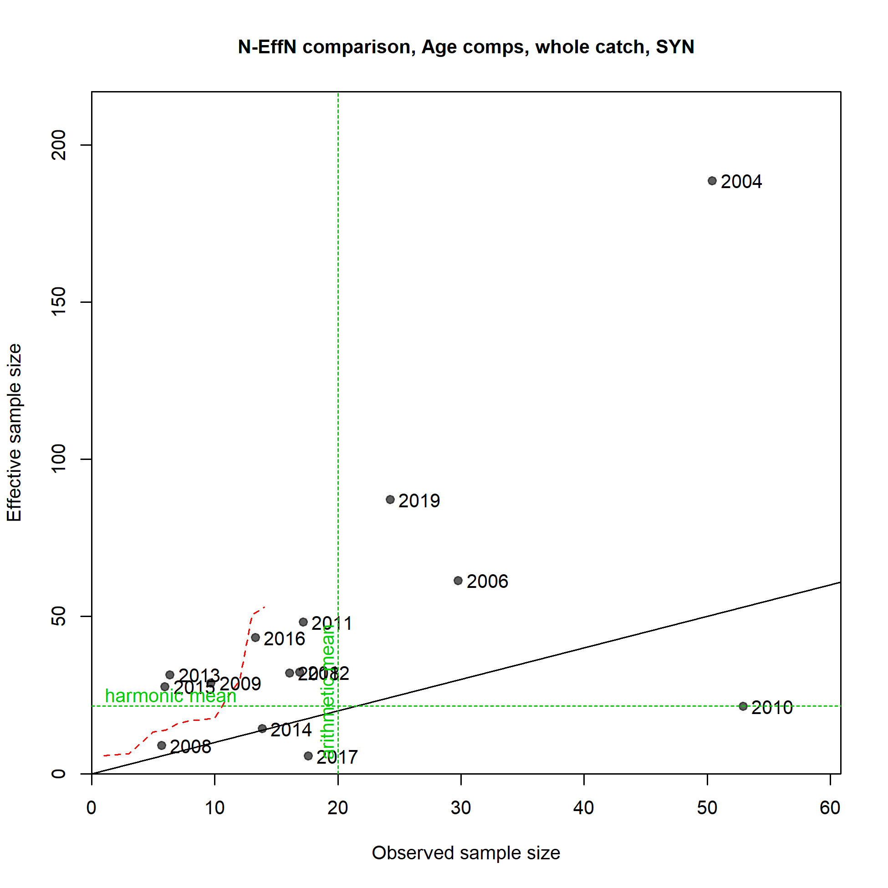
N-EffN comparison, Age comps, whole catch, SYN
file: comp_agefit_sampsize_flt4mkt0.png

Mean age for SYN with 95% confidence intervals based on current sample sizes.
Francis data weighting method TA1.8: thinner intervals (with capped ends) show result of further adjusting sample sizes based on suggested multiplier (with 95% interval) for age data from SYN:
0.4281 (0.251-1.4208)
For more info, see Francis (2011).
file: comp_agefit_data_weighting_TA1.8_SYN.png
Age comps, whole catch, HBLL.
'N adj.' is the input sample size after data-weighting adjustment. N eff. is the calculated effective sample size used in the McAllister-Ianelli tuning method.
file: comp_agefit_flt5mkt0.png
Pearson residuals, whole catch, HBLL (max=1.67)
Closed bubbles are positive residuals (observed > expected) and open bubbles are negative residuals (observed < expected).
file: comp_agefit_residsflt5mkt0.png

N-EffN comparison, Age comps, whole catch, HBLL
file: comp_agefit_sampsize_flt5mkt0.png
Mean age for HBLL with 95% confidence intervals based on current sample sizes.
Francis data weighting method TA1.8: thinner intervals (with capped ends) show result of further adjusting sample sizes based on suggested multiplier (with 95% interval) for age data from HBLL:
0.4701 (0.4701-Inf)
For more info, see Francis (2011).
file: comp_agefit_data_weighting_TA1.8_HBLL.png
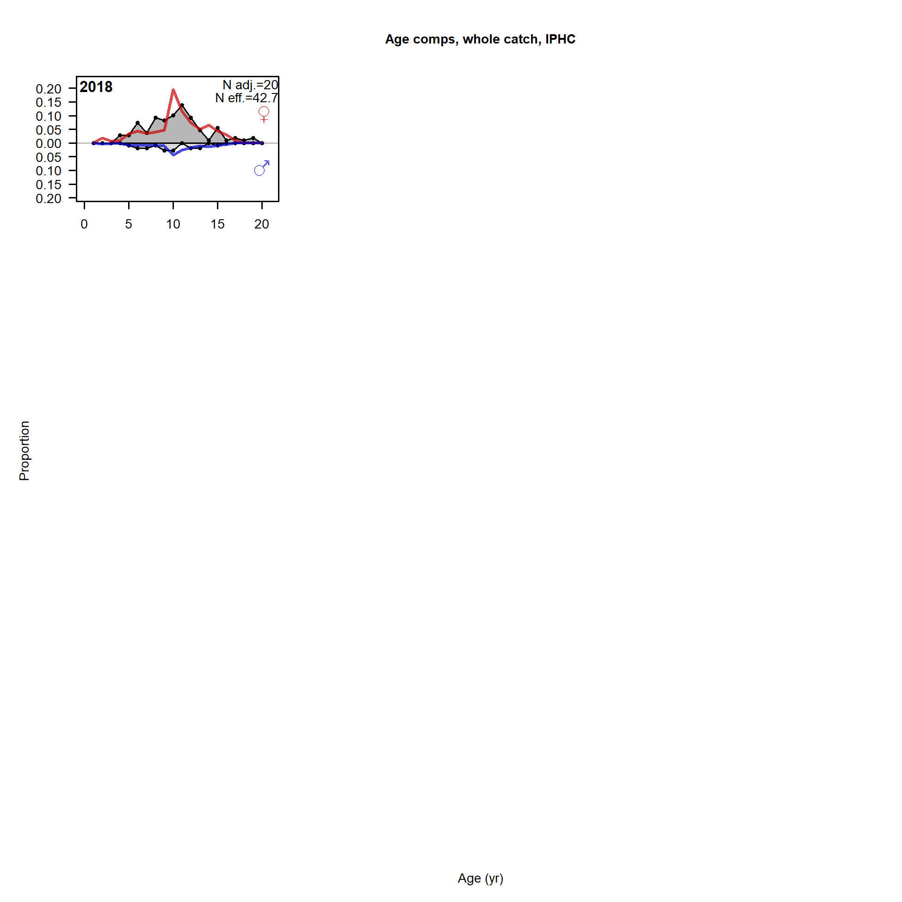
Age comps, whole catch, IPHC.
'N adj.' is the input sample size after data-weighting adjustment. N eff. is the calculated effective sample size used in the McAllister-Ianelli tuning method.
file: comp_agefit_flt6mkt0.png
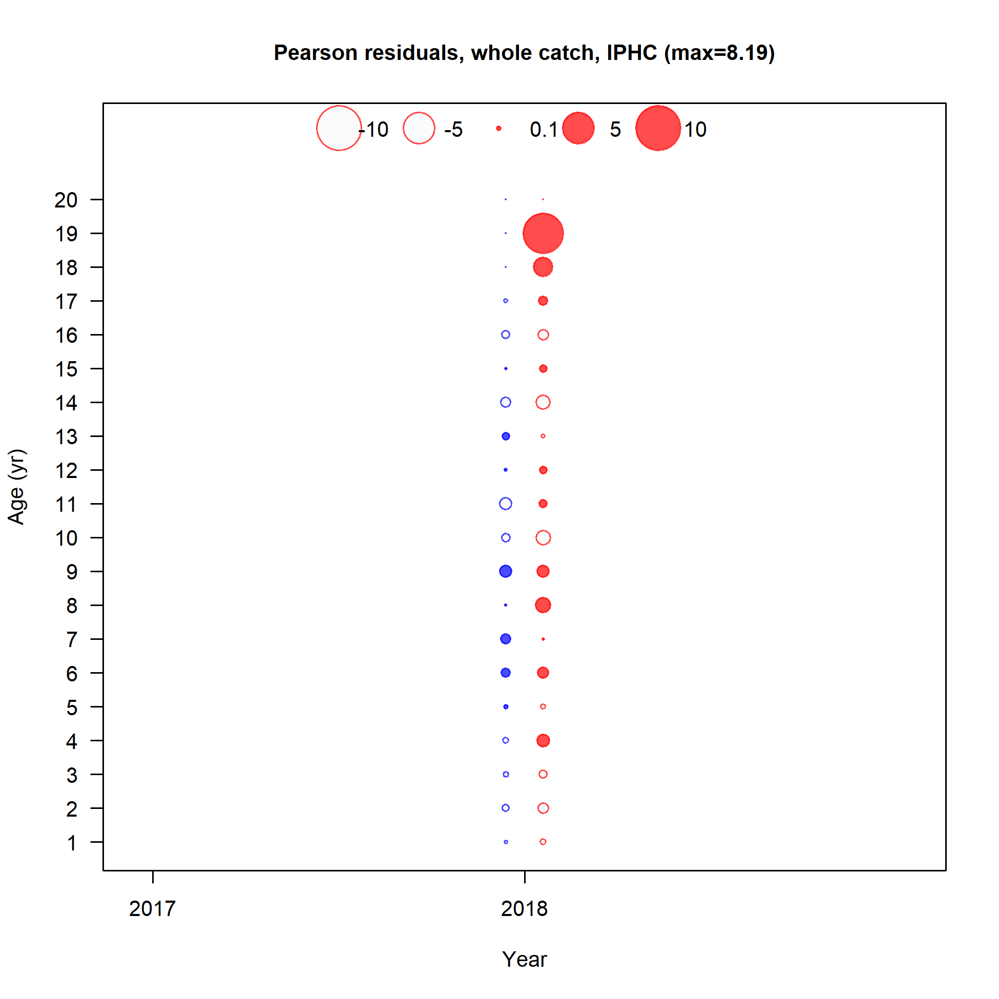
Pearson residuals, whole catch, IPHC (max=8.19)
Closed bubbles are positive residuals (observed > expected) and open bubbles are negative residuals (observed < expected).
file: comp_agefit_residsflt6mkt0.png
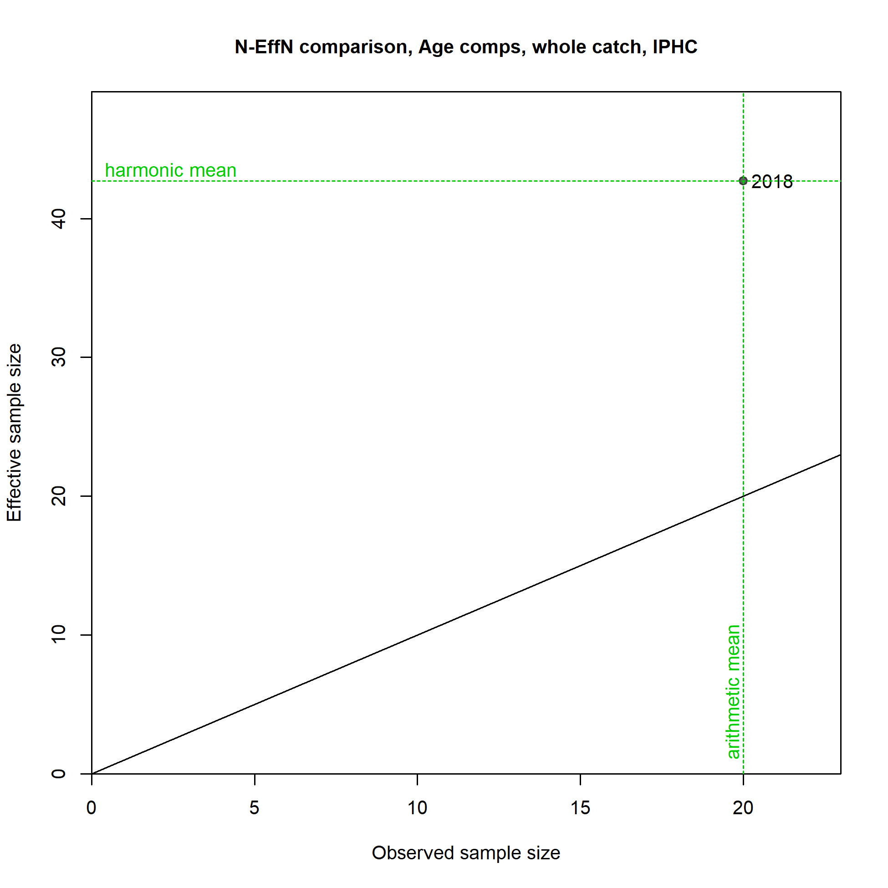
N-EffN comparison, Age comps, whole catch, IPHC
file: comp_agefit_sampsize_flt6mkt0.png

Mean age for IPHC with 95% confidence intervals based on current sample sizes.
Francis data weighting method TA1.8: too few points to calculate adjustments.
For more info, see Francis (2011).
file: comp_agefit_data_weighting_TA1.8_IPHC.png
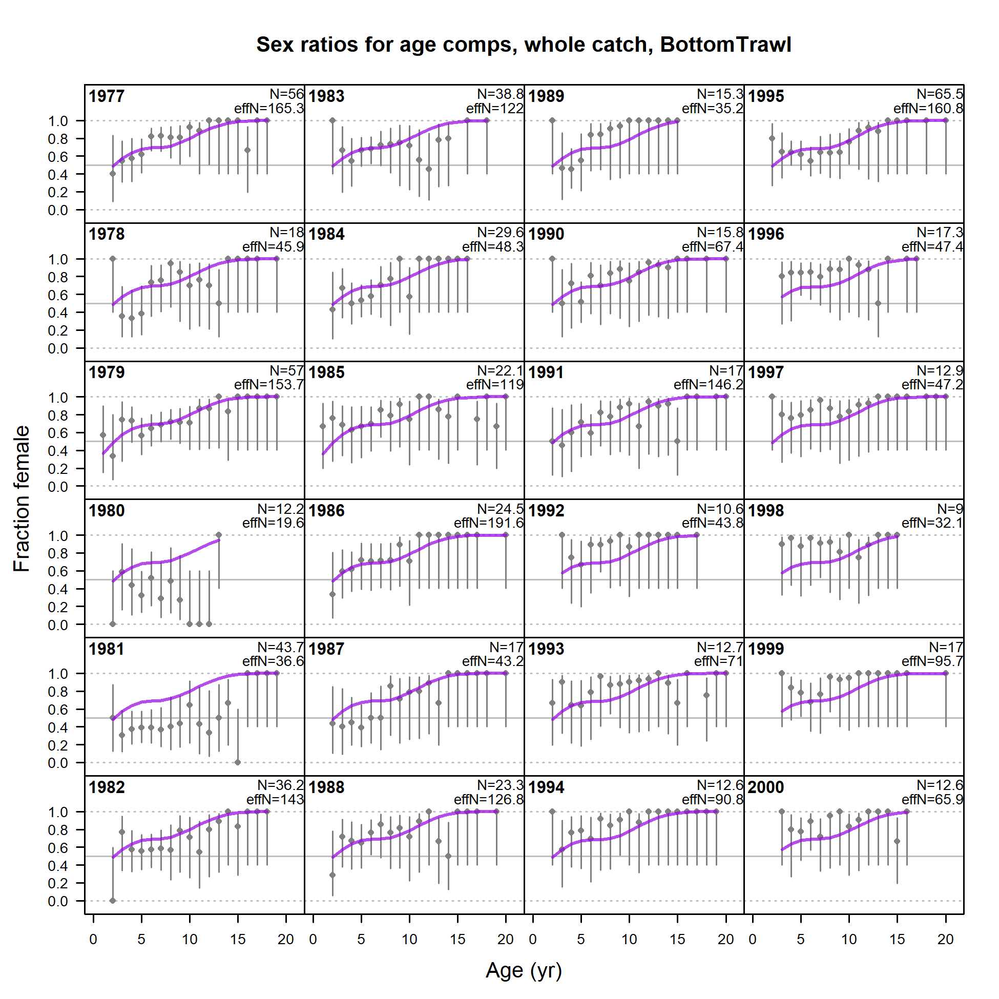
Sex ratios for age comps, whole catch, BottomTrawl (plot 1 of 2).
Observed sex ratios (points) with 75% intervals (vertical lines) calculated as a Jeffreys interval based on the adjusted input sample size. The model expectation is shown in the purple line.
file: sexratio_age_flt1mkt0_page1.png
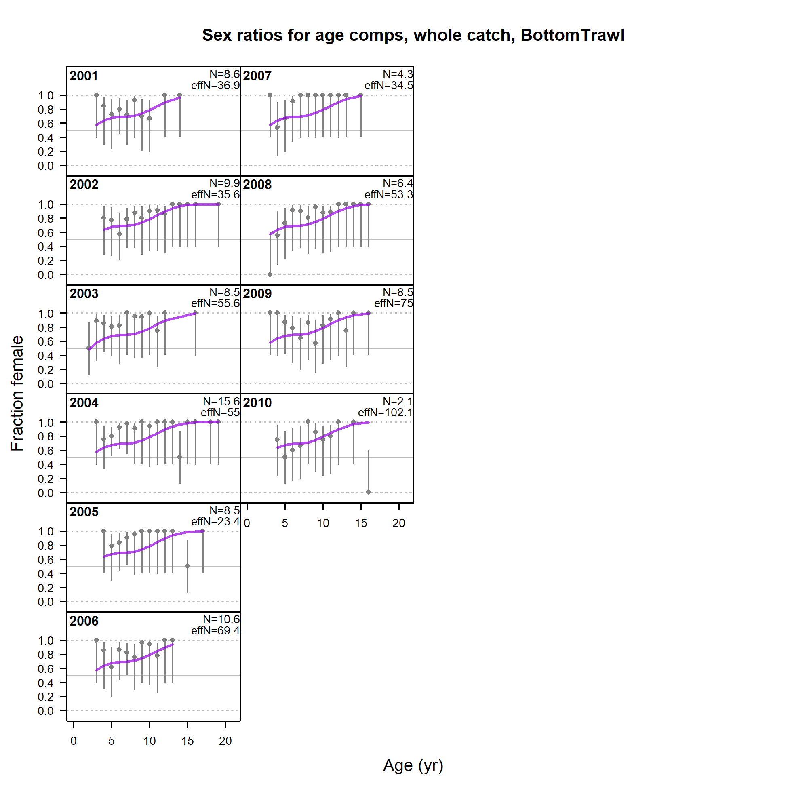
Sex ratios for age comps, whole catch, BottomTrawl (plot 1 of 2).
Observed sex ratios (points) with 75% intervals (vertical lines) calculated as a Jeffreys interval based on the adjusted input sample size. The model expectation is shown in the purple line. (plot 2 of 2)
file: sexratio_age_flt1mkt0_page2.png

Sex ratios for age comps, whole catch, HookLine.
Observed sex ratios (points) with 75% intervals (vertical lines) calculated as a Jeffreys interval based on the adjusted input sample size. The model expectation is shown in the purple line.
file: sexratio_age_flt2mkt0.png
Sex ratios for age comps, whole catch, SYN.
Observed sex ratios (points) with 75% intervals (vertical lines) calculated as a Jeffreys interval based on the adjusted input sample size. The model expectation is shown in the purple line.
file: sexratio_age_flt4mkt0.png
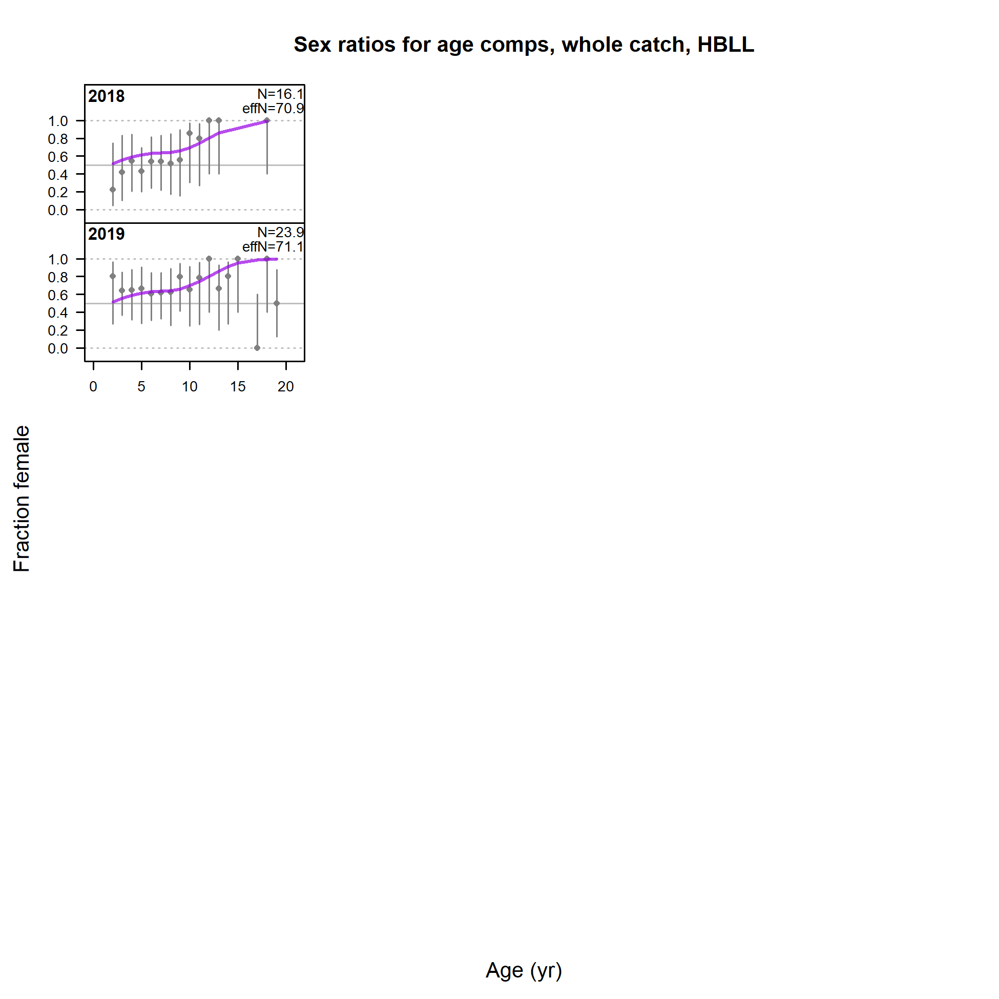
Sex ratios for age comps, whole catch, HBLL.
Observed sex ratios (points) with 75% intervals (vertical lines) calculated as a Jeffreys interval based on the adjusted input sample size. The model expectation is shown in the purple line.
file: sexratio_age_flt5mkt0.png
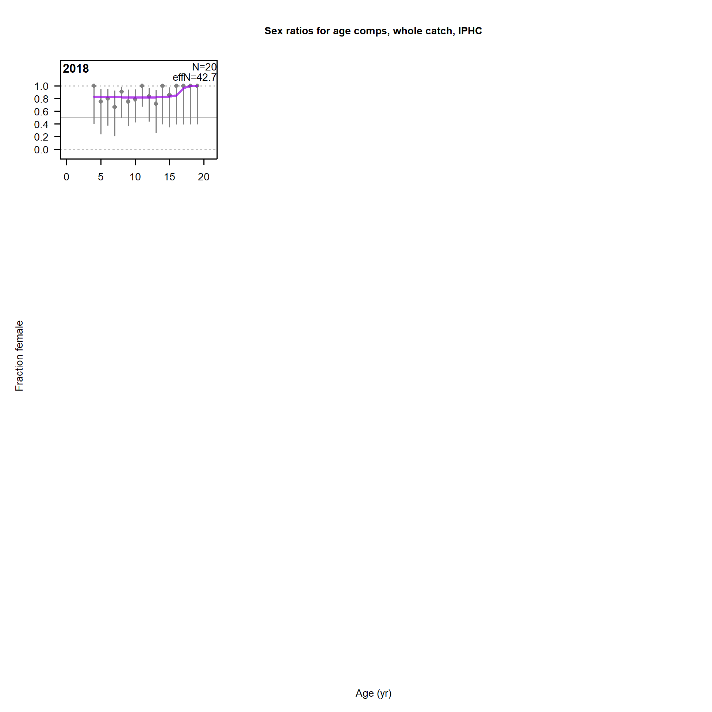
Sex ratios for age comps, whole catch, IPHC.
Observed sex ratios (points) with 75% intervals (vertical lines) calculated as a Jeffreys interval based on the adjusted input sample size. The model expectation is shown in the purple line.
file: sexratio_age_flt6mkt0.png
{kind=link}
{kind=link}
{kind=link}
{kind=link}
{kind=link}
{kind=link}
{kind=link}
{kind=link}
{kind=link}
{kind=link}
{kind=link}
{kind=link}
{kind=link}